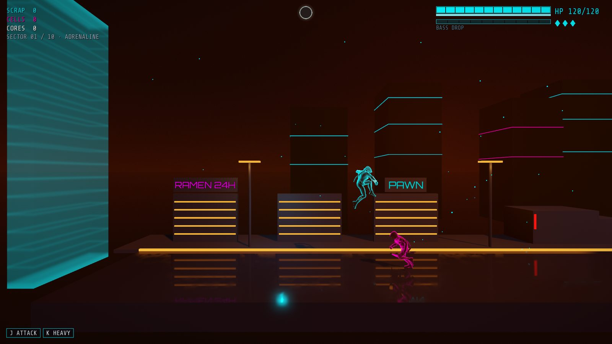

Mechanics
How Saint Manick plays today. Numbers come from the design document and the game's data files, and may change while the game is in early development.

The loop
Nick has 120 HP, a 40-point shield that regenerates after 3 seconds without damage, and 3 lives. At 0 HP he loses a life and respawns at the last zone checkpoint. With no lives left the run ends. After Game Over, Karen's Shop lets the player spend what the run collected on permanent upgrades and equip a Run Booster, then start again from Zone 1. The design target is 2–3 runs to clear the slice for an average player and 4–5 for a weaker one. That target is not tuned yet.
Zones
The slice has ten zones, the Factory (1–4) then the Neon District (5–10).
| Zone | Name | What happens |
|---|---|---|
| 1 | Street Entrance | A short street fight with 3 Runners |
| 2 | Piston Gauntlet | Platforms over a toxic pit, with ceiling pistons that slam on the downbeat |
| 3 | Security Lock | A top-down room with a bomb grid and two waves |
| 4 | Scaffolding & Vista | Catwalks, with Runners, a Bruiser and two Snipers |
| 5 | Neon Market | A tiered street with Runners and a Bruiser |
| 6 | Plaza Brawl | A top-down crowd fight |
| 7 | Enforcer | The Rhythm Enforcer mini-boss |
| 8 | Escape | A kill wall at 5.5 m/s, with blast doors and falling signs |
| 9 | Ascent | A freight elevator ride with two waves |
| 10 | The Headliner | The boss |
The camera is Karen's drone. In side-scroll Nick is locked to one plane, and up and down do nothing. In top-down (Zones 3 and 6 and the Headliner's second phase) depth movement unlocks and jumping is suppressed.
Combat and controls
There is no stamina. A light attack with the katana does 12 damage and a heavy attack with the bionic arm does 28. Dash and roll give invincibility frames. The Ability Bar fills as hits land and never blocks an input. It pays for the EMP Dash-Cancel (25) and, when full, Bass Drop: 90 damage in a 10 m radius, detonating on the next downbeat.
| Action | Keyboard | Gamepad |
|---|---|---|
| Move | A/D or ←/→ | Left stick or D-pad |
| Depth (top-down only) | W/S or ↑/↓ | Left stick up/down or D-pad up/down |
| Jump | Space | A |
| Light / Heavy | J / K | X / Y |
| Dash / Roll | Shift or Q / Ctrl or E | RB / B |
| Ultimate (Bass Drop) | L | LB |
| Pause | Esc | Start |
Enemies and bosses
| Enemy | HP | Behaviour |
|---|---|---|
| Runner | 30 | Chases, telegraphs on a beat, lunges on the next |
| Bruiser | 90, plus an 80-point shield | Swings only on the downbeat |
| Sniper | 24 | Arms within 16 m, aims, locks, fires on beat 1 |
| Rhythm Enforcer (Zone 7) | 900 | An 8-beat cycle: shield up while advancing, a telegraph, a 3-hit burst, two vulnerable beats |
| The Headliner (Zone 10) | 2400 | Phase 1 is a shielded side-scroll duel. At 50% HP the tempo jumps to 160 BPM and the camera goes top-down for a bullet hell. The shield overheats after 24 beats. It ends with an enraged melee. |
The beat rule
The beat belongs to the world, not the player. Enemy telegraphs, pistons and other hazards are locked to the Conductor's tempo, and an attack shows a white-hot rim flash one beat before it lands. Nothing is required of the player on the beat. The tempo rests at 128 BPM, rises by 2 BPM per active enemy up to +16, and runs at 160 for the boss. The beat offers two small rewards and no requirements: Bass Drop detonates on a downbeat, and a dodge started within ±0.06 s of a beat refunds half its cooldown.
Meta-progression, shop and combo skill tree
| Currency | Comes from | Spent on |
|---|---|---|
| Scrap | Every kill | Permanent upgrades: Max HP +20 (100), Max Shield +10 (150), Extra Life (300) |
| Cells | The Enforcer (15), the escape (10), the elevator (10) | The combo tree |
| Cores | District bosses (the Headliner: 1) | The second Run Booster slot (1) |
The combo skill tree is a chain: Tri-Cut (A-A-A) and Launcher (A-A-B) are free, then Sweeper (A-B-B, 20 Cells), then Battery Ram (B-B, 25 Cells). A locked route still works as a plain hit. Run Boosters last one run: Tempo Shield (+50% max shield), Adrenaline (+20% move speed) and Scrap Magnet (double Scrap). The demo has no shop, unlocks every route and banks nothing. Prices and yields are first-pass and not balanced yet.
Not built yet
Level One, the Suburbs, is designed and not built. The Corporate High-Rise and Central Tower districts, Karen as the final boss, a parry, upgrade tiers for damage and armour, and a branching skill tree are designed or planned and are not in the game.